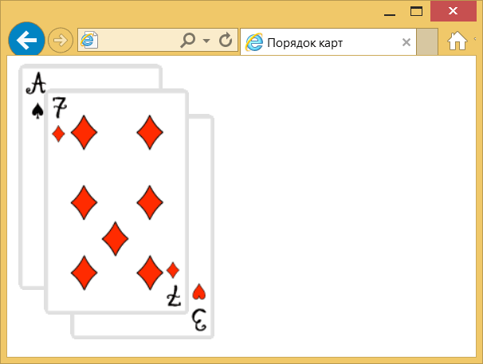

z-index
Любые позиционированные элементы на веб-странице могут накладываться друг на друга в определенном порядке, имитируя тем самым третье измерение, перпендикулярное экрану. Каждый элемент может находиться как ниже, так и выше других объектов веб-страницы, их размещением по z-оси и управляет z-index. Это свойство работает только для элементов, у которых значение position задано как absolute, fixed или relative.
Краткая информация
| Значение по умолчанию | auto |
|---|---|
| Наследуется | Нет |
| Применяется | К позиционированным элементам |
Синтаксис
z-index: <число> | autoЗначения
В качестве значения используются целые числа (положительные, отрицательные и ноль). Чем больше значение, тем выше находится элемент по сравнению с теми элементами, у которых оно меньше. При равном значении z-index, на переднем плане находится тот элемент, который в коде HTML описан ниже. Хотя спецификация и разрешает использовать отрицательные значения z-index, но такие элементы не отображаются в браузере Firefox до версии 2.0 включительно.
Кроме числовых значений применяется auto — порядок элементов в этом случае строится автоматически, исходя из их положения в коде HTML и принадлежности к родителю, поскольку дочерние элементы имеют тот же номер, что их родительский элемент.
Пример
<!DOCTYPE html>
<html>
<head>
<meta charset="utf-8">
<title>Порядок карт</title>
<style>
.card { position: relative; }
.three { top: 50px; left: 55px; z-index: 5; }
.seven { left: -120px; top: 25px; z-index: 2;}
.ace { left: -295px; z-index: 1; }
.card:hover { z-index: 10; }
</style>
</head>
<body>
<img src="images/3.png" alt="3" class="card three">
<img src="images/7.png" alt="7" class="card seven">
<img src="images/ace.png" alt="Туз" class="card ace">
</body>
</html>В данном примере при наведении курсора на карту она выходит на передний край, частично перекрывая остальные собой остальные изображения (рис. 1).

Рис. 1. Изменение порядка карт
Объектная модель
Объект.style.zIndex
Примечание
Список, созданный с помощью тега <select>, в браузере Internet Explorer до версии 6.0 включительно всегда отображается поверх других элементов, несмотря на значение z-index.
Internet Explorer до версии 7.0 включительно интерпретирует auto как 0.
В браузере Firefox до версии 2.0 включительно отрицательное значение z-index располагает элемент ниже фона веб-страницы и его контента.
Спецификация
| Спецификация | Статус |
|---|---|
| CSS Transitions | Рабочий проект |
| CSS Level 2 (Revision 1) | Рекомендация |
Браузеры
| Internet Explorer | Chrome | Opera | Safari | Firefox | ||
| 4 | 8 | 1 | 4 | 1 | 1 | 3 |
| Android | Firefox Mobile | Opera Mobile | Safari Mobile |
| 1 | 1 | 6 | 1 |